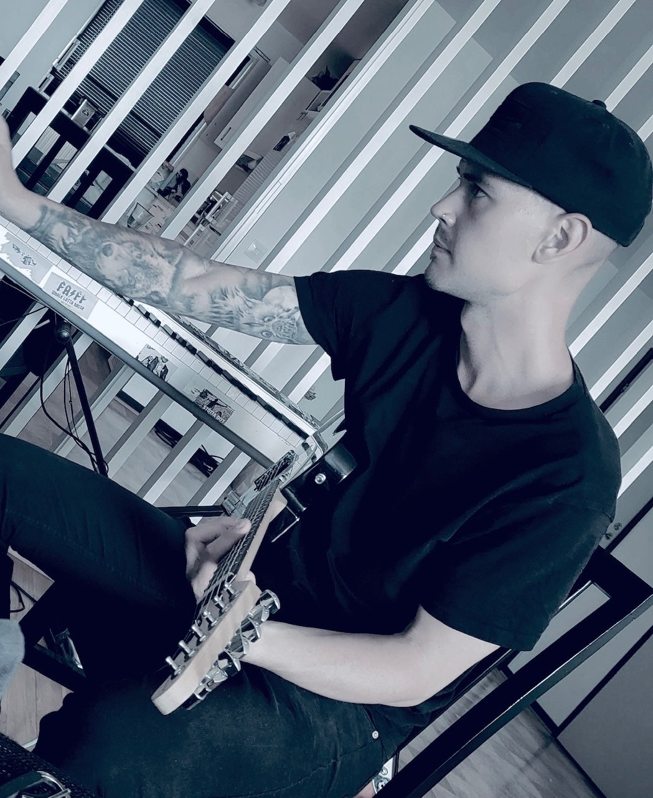

Lite om mig
Mitt namn är Robin Johansson, jag är 33 år gammal och bor i Varberg med min sambo och våra två döttrar. Jag är en lugn, ambitiös kille som älskar nya utmaningar. Jag har stort intresse av IT, älskar ljud, bild och alla typer av skapande, därför kändes systemutvecklare som ett klockrent val för mig. Jag är nu inne på min andra termin på Systemutvecklare.NET på Campus Varberg och är ute efter en LIA-plats inför vår första LIA-period hösten 2026.

När jag får lite tid över brukar jag ofta sitta med musik.